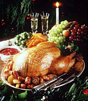

Правительство Великобритании советует быть более активными во время рождественских каникул и не забывать о пешеходных прогулках, особенно в Рождество, с целью сжигания калорий, потреблённых во время праздничного обеда.
Правительство Великобритании советует быть более активными во время рождественских каникул и не забывать о пешеходных прогулках, особенно в Рождество, с целью сжигания калорий, потреблённых во время праздничного обеда.
Традиционный рождественский обед, состоящий из индейки и пудинга, в среднем составляет 1500 калорий, что превышает половину рекомендуемой ежедневной нормы для мужчины и три четверти — для женщины. По инициативе Департамента здравоохранения Великобритании в рамках программы Change4Life разработано и широко внедряется новое направление — Walk4Life, девиз которого «Правильно питайтесь, больше двигайтесь и живете дольше!»
Если бы каждый житель Великобритании после праздничного рождественского обеда вышел прогуляться по берегу моря, прошёлся бы по улице, на которой живет, то это расстояние составило бы 50 миллионов миль.
Министр здравоохранения Великобритании Gillian Merron отметила, что «…какой бы ни была погода, традиционная прогулка в праздничный вечер — замечательный способ избавиться от чувства вялости и пассивности и активно повести Рождество в кругу семьи и друзей. Будьте активнее, и в вашем здоровье произойдут реальные изменения! Дополнительные прогулки пешком смогут объединить всех нас в борьбе за здоровый образ жизни!»
Если у вас планируется традиционный рождественский обед, то, по мнению экспертов Британского фонда питания (British Nutrition Foundation), вы употребите около 1470 калорий. Например:

| Два ломтика индейки (с кожей) | 225 калорий |
| Колбаска с начинкой | 185 калорий |
| 4 небольших жареных картофеля | 400 калорий |
| Порция вареных ростков фасоли | 30 калорий |
| Порция жареной моркови | 100 калорий |
| Соус | 50 калорий |
| Порция рождественского пудинга | 330 калорий |
| Столовая ложка двойных сливок | 150 калорий |
| ИТОГО | 1470 калорий |
В рамках программы Walk4Life организовано десять популярных пешеходных маршрутов, включая посещение лондонских достопримечательностей, поход через Бирмингемское болото, на котором (по трилогии Толкиена) расположен Шир — место жительства хоббитов, а также прогулку по Национальному Парку Highfield (Манчестер).
Таким образом, в период рождественских праздников очень важно как можно дольше и веселее проводить светлое время суток на свежем воздухе, что, несомненно, поможет съесть меньше пирогов с мясом и избавиться от послерождественской хандры.
Walk To Burn Off Christmas Calories Urges UK Government.
Source: Department of Health, NHS Choices, The Ramblers.
Medical News Today